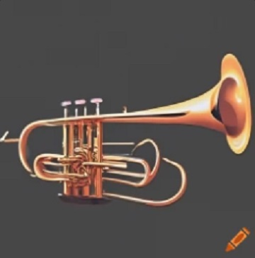
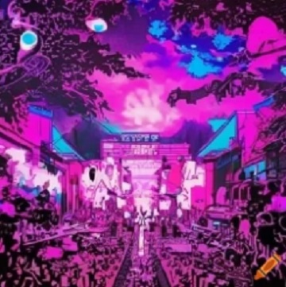

Klasická hudba
Tento žánr zahrnuje hudbu komponovanou v období od středověku až po současnost, ale často se zaměřuje na díla baroka, klasicismu a romantismu. Vyznačuje se komplexní strukturou a používáním tradičních hudebních nástrojů jako jsou housle, klavír a orchestr.

Jazz
Vznikl na začátku 20. století v afroamerických komunitách v New Orleans. Jazz je známý svou improvizací, synkopovanými rytmy a bohatou harmonickou strukturou. Zahrnuje subžánry jako swing, bebop a cool jazz.
Rocková hudba
Vznikla v 50. a 60. letech 20. století a vyznačuje se silnými rytmy, elektrickými kytarami a energickými vystoupeními. Subžánry zahrnují punk rock, heavy metal a alternativní rock.
Popová hudba
Je známá svým širokým komerčním apelem a chytlavými melodiemi. Tento žánr se neustále vyvíjí a často odráží současné hudební trendy. Popová hudba se často vyznačuje jednoduchými texty a tanečními rytmy.
Hip hop
Tento žánr vznikl v 70. letech v New Yorku a zahrnuje rap, DJing, breakdancing a graffiti. Hip hop je kulturní hnutí a hudební žánr, který často reflektuje sociální a politické otázky.

Elektronická taneční hudba (EDM)